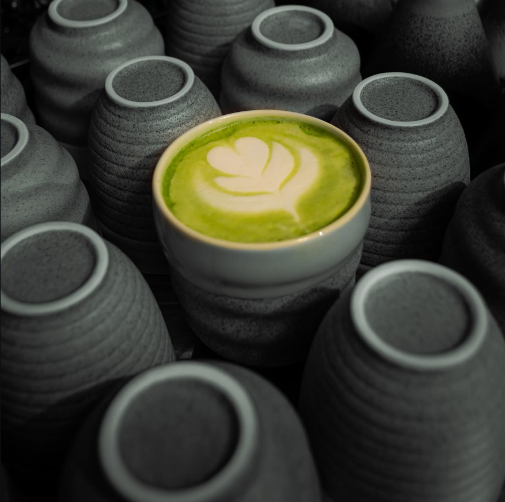
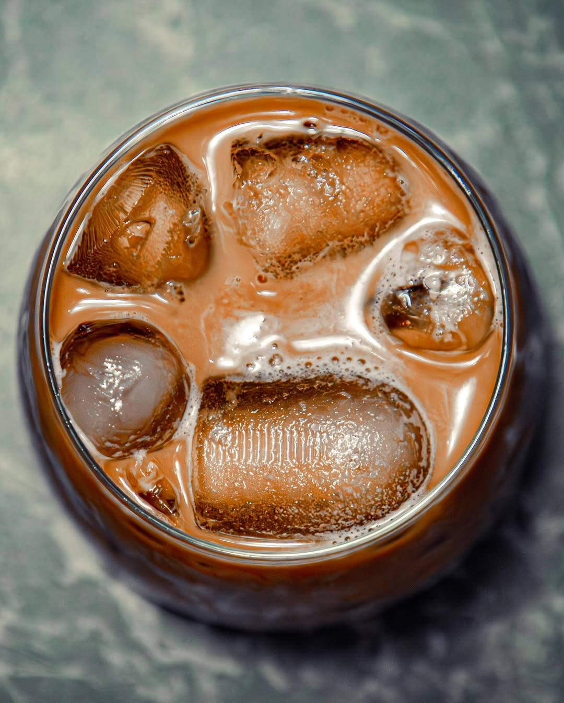
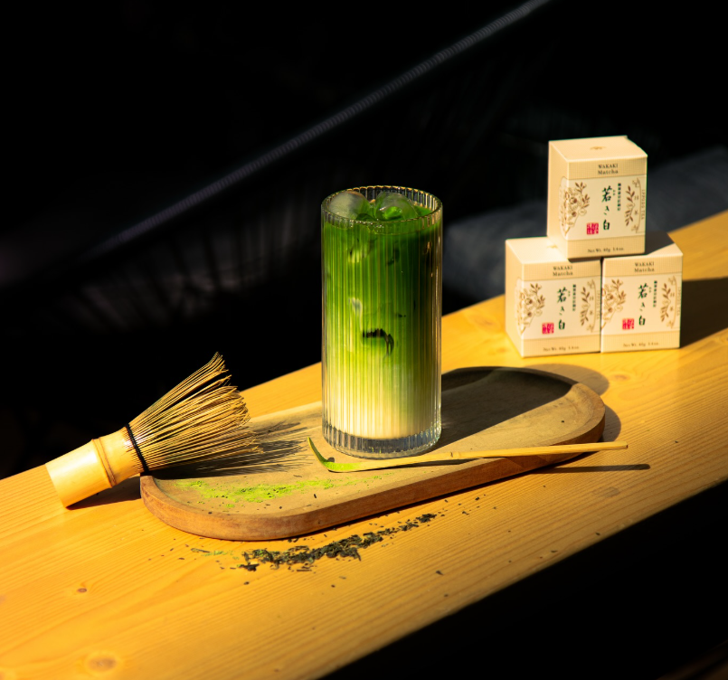

Vă mulțumim că ne vizitați site-ul. Vă invităm la cafeaua de dimineată și la un sushi delicios.
Puteți alege din marea noastră varietate de cafele si
Cafeaua zilei
Promoții și oferte
Super ofertă de weekend
Noul nostru bistro oferă reduceri de 10% 15% pentru toate comenzile de cafea și sushi plasate în intervalul 10-14.
Oferta este valabilă doar în zilele de sâmbătă și duminică, cu sau fără rezervări, la mesele C&S.
În cazul în care comandați mai mult de zece rulouri de sushi primiți și un card de fidelitate pentru cafenea!
Ofertă pachet fusion
Bistro-ul nostru oferă pachete cuprinzând:
specialty coffee
Un set de 4 rulouri de sushi (maki) de sortimente diferite
O cafea caldă la alegere
Un matcha latte
Gratis: o farfurioară ornată cu sigla acestei cafenele
Gratis: o invitație la următoarele evenimente din bistro
Gratis: o sticluță extra cu sos de soia (am comandat prea mult sos pentru sushi și nu mai avem loc în depozit. Nu ne reclamați la ANPC, mulțumim de înțelegere!).
Evenimente
- Movie night inceput de primavara
- Movie night 1 aprilie
- Petrecere aniversala
- New movie release
- Movie night ziua copiilor
Produsele noastre
Vă oferim o multitudine de metode să vă delectați în bistro-ul nostru fusion.
Băuturi Calde (Cafea)
În caz că nu puteți bea cafea fiindcă sunteți la dietă și doar vă uitați la ea, vă recomandăm un ceai cald la cafenea!
Avem cafea și derivate precum:
Espresso Double
Long Black
V60
Cortado
Flat White
energie pentru următoarele evenimente din viața ta
Sushi Rolls
Oferim preparatele clasice de sushi plus câteva creations personnelles, hai, fă rezervări!
Sushi Rolls:
California Roll
Tempura Shrimp Roll
Veggie Roll
Chicken Katsu Roll
King Roll (oriental, meridional și occidental, la 450g)
Maki la alegere
Nigiri la alegere
experiență umami
Băuturi (Alcool și Răcoritoare)
Paharele noastre sunt umplute cu:
Cold Brew Martini
Ramune Soda Pop
Sake (100ml)
Bere Asahi
compoziție secretă de Matcha (sincer, noi folosim doar lapte vegan +4 LEI)
Orar
Cod
Perioadă
Zi
Interval dimineata
Pauza de masa
Interval seară
Zile Lucrătoare
Luni
10-12
12-14
14-20
Marti
9-12
12-14
14-21
Miercuri
9-11
11-13
14-21
Joi
9-11
11-13
14-21
Vineri
9-12
12-14
14-19
Weekend
Sambata
10-12
12-13
13-16
Duminica
10-14
-
inchis
Închis cu ocazia sărbătorilor legale, sau, când ne e mai lene așa.
Atentie!!! in prima zi a lunii facem inventar.

Special Matcha

Latte cu ciocolata

Iced Matcha
Anunțuri
Nu avem niciun eveniment de anunțat la cafenea, doar a trecut ceva vreme de la ultimul anunț și ne-am gândit să vă reamintim să faceți rezervări.
Liber la sushi și cafea în bistro!!!!
Am adăugat un nou tip de sushi roll în meniu
Am adăugat cafeaua V60 în meniul de la cafenea
Am adăugat un desert fusion cu matcha în meniu
Am adăugat sake cald în meniu (nu se combină cu cafeaua, vă rugăm)
Nu avem evenimente noi de anunțat, dar ne era dor să vă preparăm un espresso.
Am adăugat platoul King Roll în meniul de sushi
Un an nou fericit și plin de cofeină!
Studiile au arătat că un mix de cafea și sushi este secretul fericirii.
E adevărat că doar studiile noastre făcute în spate la bistro, dar astea sunt detalii.
Întrebări frecvente
Cafeaua dumneavoastră provoacă palpitații și insomnii severe?
Da! De aceea vă așteptăm în fiecare dimineață la cafenea.
Rulourile de sushi provoacă dependență și dorința incontrolabilă de a face rezervări zilnice?
Da!
Meniul vostru fusion duce la cheltuirea întregului salariu în acest bistro?
Foarte! Da!
Sunteți cumva asociați cu medicii cardiologi, clinicile de somnologie și organizatorii de evenimente japoneze?
Ne rezervăm dreptul de a nu răspunde la această întrebare; mulțumim pentru înțelegere!
Dacă doriți să vă preparați singuri sushi-ul și cafeaua acasă (deși de ce v-ați complica atunci când există bistro-ul nostru?)
vă recomandăm următoarele rețete pe care sperăm să le încercați, să vedeți cât e de ușor să rulați orezul perfect,
și în final să lăsați munca pe seama noastră și să faceți o rezervare la cafenea . Mulțumim! 😁